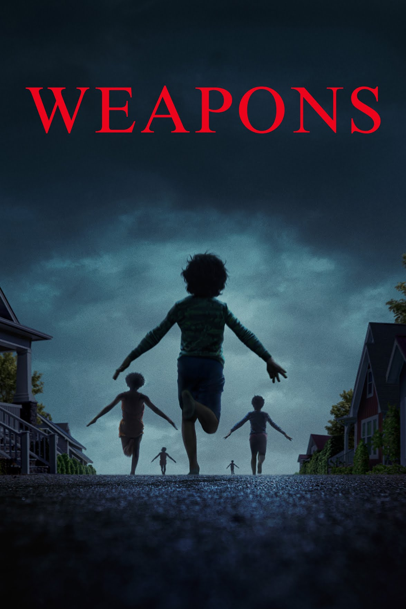
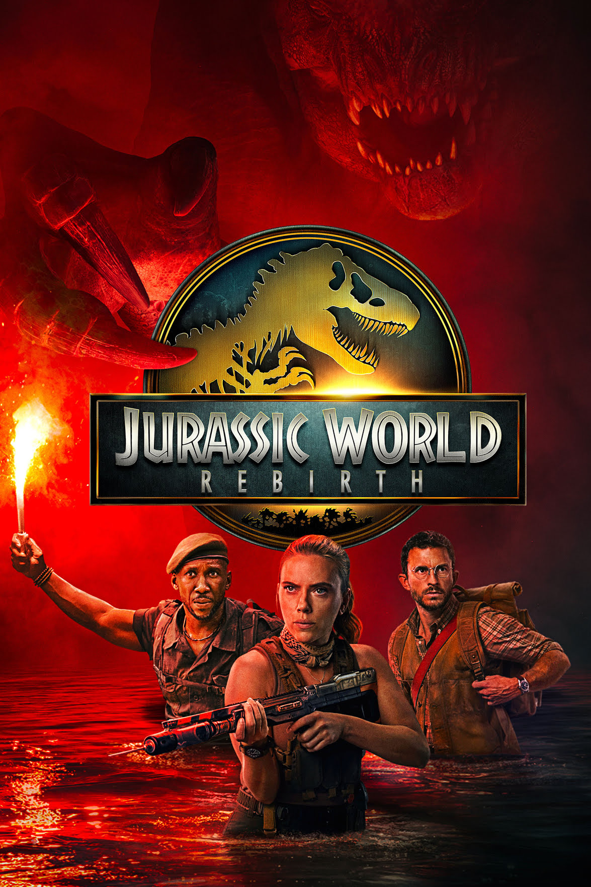
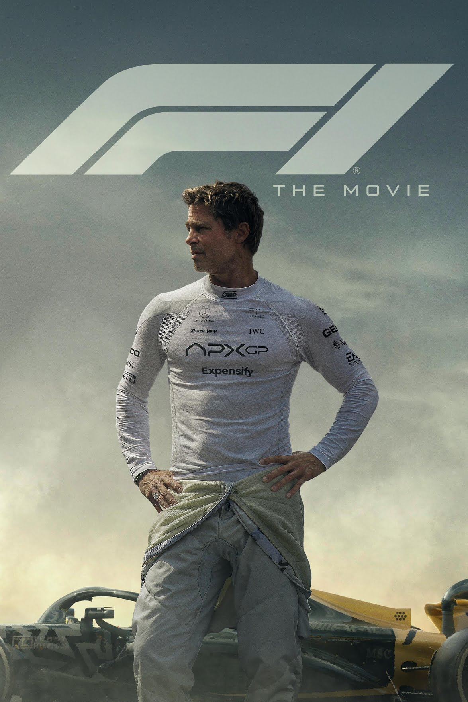
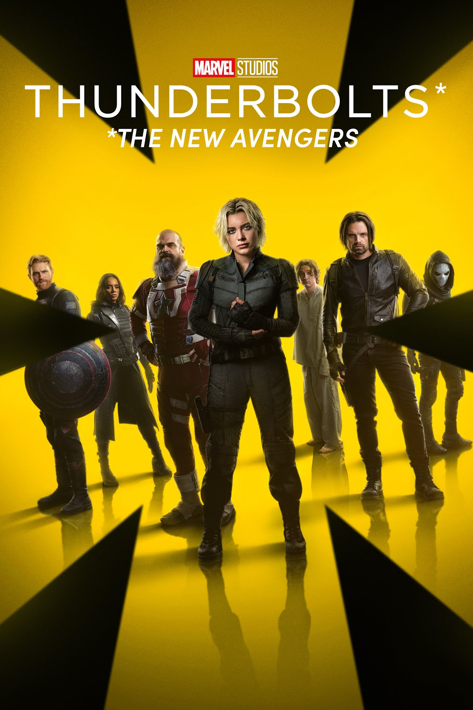
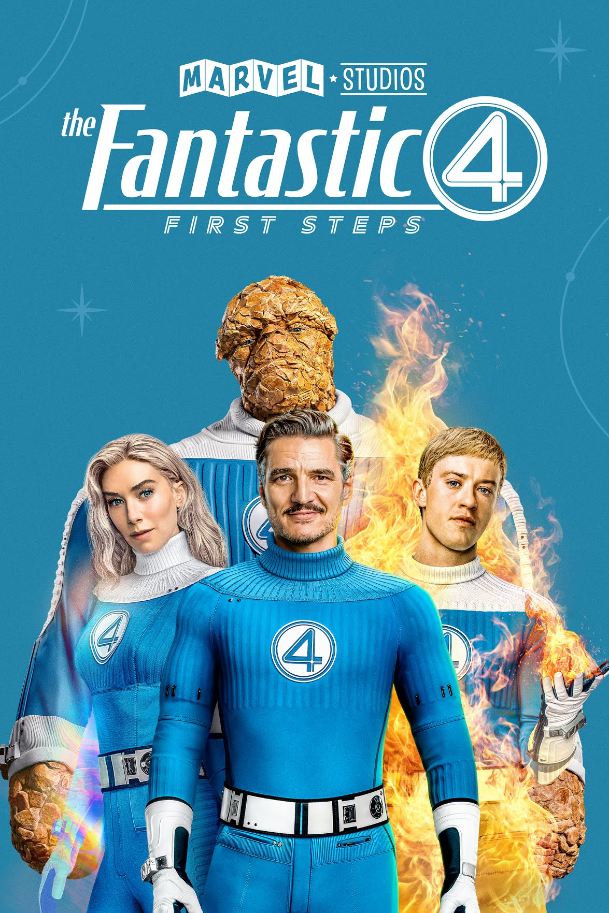

Weapons
Weapons is a 2025 American mystery horror film directed, written, produced, and co-scored by Zach Cregger.[5] It stars an ensemble cast including Josh Brolin, Julia Garner, Alden Ehrenreich, Austin Abrams, Cary Christopher, Toby Huss, Benedict Wong, and Amy Madigan. Its plot follows the case of seventeen children from the same classroom who mysteriously run away on the same night at the same time. Weapons was released in theaters in the United States on August 8, 2025, by Warner Bros. Pictures. The film received positive reviews and grossed $268.3 million against a $38 million budget.
0

Jurassic World Rebirth
Jurassic World Rebirth is a 2025 American science fiction action film directed by Gareth Edwards and written by David Koepp. A standalone sequel to Jurassic World Dominion (2022), it is the fourth Jurassic World film, as well as the seventh installment overall in the Jurassic Park franchise. The film features Scarlett Johansson, Mahershala Ali, Jonathan Bailey, Rupert Friend, Manuel Garcia-Rulfo, and Ed Skrein. In Jurassic World Rebirth, the world's de-extinct dinosaurs live around the equator, which provides the last viable climate for them to survive. A team travels to a former island research facility where three specific gigantic species of dinosaurs reside, with the goal of extracting samples that are vital for a heart disease treatment. The team also rescues a shipwrecked family, and both groups struggle to survive after becoming stranded on the island.
0

F1:The Movie
F1 (marketed as F1 the Movie) is a 2025 American sports drama film starring Brad Pitt as Formula One (F1) racing driver Sonny Hayes, who returns after a 30-year absence to save his former teammate's underdog team, APXGP, from collapse. The film was directed by Joseph Kosinski from a screenplay by Ehren Kruger. Damson Idris, Kerry Condon, Tobias Menzies, and Javier Bardem also star in supporting roles.
0

Thunderbolts
Thunderbolts* [a] is a 2025 American superhero film based on Marvel Comics featuring the team Thunderbolts. Produced by Marvel Studios and distributed by Walt Disney Studios Motion Pictures, it is the 36th film in the Marvel Cinematic Universe (MCU). The film was directed by Jake Schreier from a screenplay by Eric Pearson and Joanna Calo, and stars an ensemble cast featuring Florence Pugh, Sebastian Stan, Wyatt Russell, Olga Kurylenko, Lewis Pullman, Geraldine Viswanathan, Chris Bauer, Wendell Pierce, David Harbour, Hannah John-Kamen, and Julia Louis-Dreyfus. In the film, a group of antiheroes are caught in a deadly trap and forced to work together on a dangerous mission.
0

The Fantastic four: First steps
The Fantastic Four: First Steps is a 2025 American superhero film based on the Marvel Comics superhero team the Fantastic Four. Produced by Marvel Studios and distributed by Walt Disney Studios Motion Pictures, it is the 37th film in the Marvel Cinematic Universe (MCU) and the second reboot of the Fantastic Four film series. The film was directed by Matt Shakman from a screenplay by Josh Friedman, Eric Pearson, and the team of Jeff Kaplan and Ian Springer. It features an ensemble cast including Pedro Pascal, Vanessa Kirby, Ebon Moss-Bachrach, and Joseph Quinn as the titular team, alongside Julia Garner, Sarah Niles, Mark Gatiss, Natasha Lyonne, Paul Walter Hauser, and Ralph Ineson. The film is set in the 1960s of a retro-futuristic world which the Fantastic Four must protect from the planet-devouring cosmic being Galactus (Ineson).
0